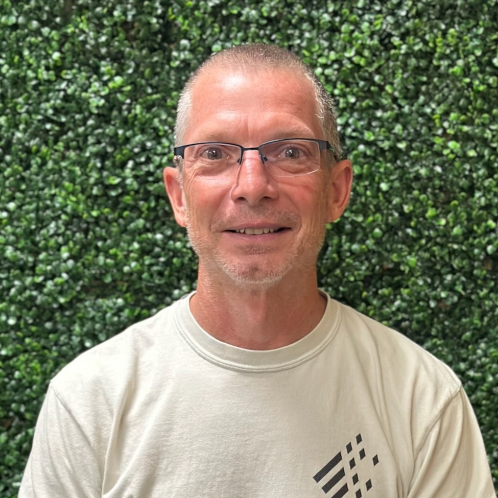
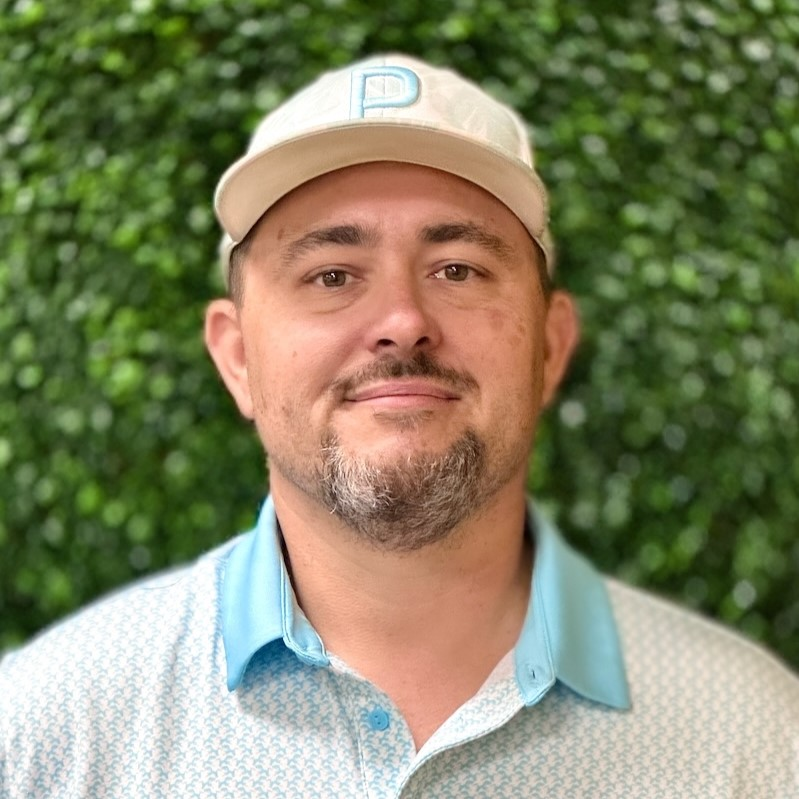

Andy Bramer
Student and Family Pastor

Cell: 502-693-7090
Email: bramer1020@gmail.com
My name is Andy Bramer I am the Student and Family Pastor of One Community Church. I have been working with students and their families for over 20 years. My wife (Ann Marie) and I, have been blessed with 2 awesome sons, Jon and Matt, who are now both married. Jon and his wife, Emili have blessed us with 3 beautiful grandkids (Annabelle, JR and Oliver). Matt and his wife Sandy just blessed us with our 4th grandchild, Everett, and 5th, Hazel. They are also a part of our worship team at OCC.
I came to know Christ when I was 12 years old while attending a local church. I struggled in my walk with Christ while I was in middle and high school. By the time I was realized it was time to quit running. I responded to God’s call into full time youth ministry at the age of 25 and have never looked back. I love working with and ministering to students and their families. One of the ways I am able to do that is through Campus Life & the Fellowship of Christian Athletes that meet weekly at Clarksville Middle & High School. I love the local church and would be glad to talk with you about any questions you might have.
Daniel Tatum
Associate Pastor

Cell: 606-224-0014
Email: dgtatum@gmail.com
My name is Daniel Tatum. I am one the associate pastors, besides alternating preaching on Sundays I also lead one of the adult life groups. I have been married to my lovely wife Wendi since 2004. We have been blessed with two children, Saul and Josie. My walk with God started with the seed my mother planted while dragging me to church and Sunday school every week when I was a kid.
I gave my life to Christ when I was 13, but I really started building a stronger relationship with him when I met Wendi. We started attending church together and in 2006 our path led us to Harvest Valley (now One Community). We quickly felt like we had found a church family instead of just a church. God has steadily led us to take on more responsibility in the church. Wendi is active in her role in working with the students while I also lead the tech team. My passion is teaching and I hope to make learning to walk with God a simple and easy to understand concept. God has called me to outreach and I also feel very strong about helping the young men in our church develop into good Christian men as they grow older. We would be glad to see you and your family join us in worshiping and serving God.
Matthew Bramer
Associate Pastor
Cell: 502-649-1527
Email: m.bramer1096@gmail.com
Hello, my name is Matthew Bramer! I am a husband and a father, and I love to share Jesus to all who will listen. I’m years old, happily married for years to my wonderful wife, Sandy. Together, we have a delightful -year-old son, Everett and an amazing -year-old daughter, Hazel. I take great pride in balancing my family life, ministry, and career. As I strive to be the best father, husband, and pastor I can be, I am continually focused on personal growth and self-improvement.
I have recently become one of the associate pastors here at One Community Church. My faith journey has been something that I've always been on. I grew up in church and was baptized when I was 7 years old. Since then, I have been following Christ but refocused my life on Christ and started really studying the Bible towards the beginning of High School. I find the theology and how we got the Bible in our language so fascinating.
For the past few years or so, I have taken on a lot of responsibility at One Community Church and I've been leading and teaching our Adult Life Group classes on Sundays and Wednesdays. If you visit our church, I might be worshipping God by playing the drums in our worship team, or leading worship singing and playing the guitar with my wife!